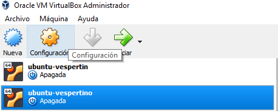
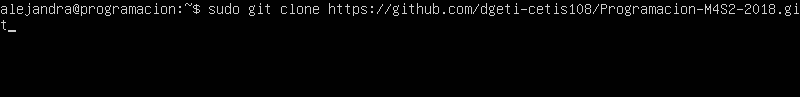

UBUNTU
- Configuracion de red
- Descargas
- Clonancion
- Configuracion de los servidores
- Configuracion del VIrtual Host
Configuracion de red
Lo primero que hay que hacer es hacer la máquina virtual, una vez que la tenemos hecha, debemos configurar la red que después será necesaria para ver lo que tenemos enlo local en el navegador
Lo primero es seleccionar la máquina y dar click en "Configuración", ahi dentro debes entrar al apartado de "Red".

Dentro del apartado de "Red", debe entrar al "Apartador 2" para configurar el adaptador y habilitar los adaptadores.

Descargas
Al iniciar la máquina virtual nos va pedir nuestro usuario y contraseña que fueron creados al instalar el sistema de Ubuntu. Para ver los paquetes es necesario ver cuáles son los paquetes que tienen actualizaciones es necesario agregar el siguiente comando "apt-get update", es necesario que siempre que querramos descargar algo, nuestra máquina este conectada a una red de Wifi.
Ya que nos muestren los paquetes ponemos el comando "apt-get upgrade" para actualizar o descargar los paquetes.

Ya que los paquetes esten actualizados, vamos a descargar PHP, MySQL Serve, Apache y PHP-MySQL, vamos añadir el comando "sudo apt-install php mysql-server apache2 php-mysql", se pueden buscar por separado, pero para hacerlo más fácil lo buscaremos todo junto.
Este paso es solo para verificar que las redes si hayan quedado bien configuradas, nos deberán aparecer tres ip´s (la local, la de la red y la que está de anfitriona), para ello agregamos el comando "ifconfig"

El siguiente paso es verificar que la red si haya sido bien configurada.
El primer paso es ingresar la ip que está en "enp0s8" en nuestro navegador de preferencia, en este caso la IP es la "192.168.7.3".
El resaultado debe ser el siguiente:
Clonación
Para que podamos clonar los repositorios de GitHub, es necesario que tengamos activos los siguientes servicios: Apache y MySQL, deberás añadir el siguiente comando para que este sea activado, "sudo service apache2 start" y para el MySQL "sudo service mysql start"Verificamos que apache esté funcionando, añadimos el comando "service--status all | grep apache2".

Después de esta verificación podemos continuar con la clonación del repositorio, es necesarioi incluir toda la URL del archivo. El comando a utilizar es "sudo git cle hhtp://github.com/dgeti-cetis108/Programacion-M4S2-2018.

Ahora cambiaremos el nombre de la carpeta a uno que sea mas sencillo con el comando "sudo mv Programacion-M4S2-2018/library.com", el nuevo nombre será "library.com".
Configuración de los servidores
El primer paso es crear el usuario library, para poder accedaer a ella desde el navegador, el primer paso es movermnos a la carpeta "bd" que se encuentra en dentro de library, después añadiremosel siguiente comando "cd library.com/db". Ya que sea confirmado que estamos dentro, el siguiente paso es que nos muestren el contenido de la base de dato, para ello es necesario que añadamos el comando "cat libary.sql".
Ahora debemos movernos a MySQL, para eso pondremos el comando "sudo -i".

Dentro de MySQL nuestro usuario no será nuestro nombre si no "root", es necesario escribir el comando "mysql" para entrar a mysql.

El siguiente paso es crear un usuario dentro de MySQL, debes incluir el siguiente comando "create user 'nombredeusuario'@'localhost' identified by 'contraseña';".

Para que el usuario pueda interactuar con la base de datos, es necesario darle privilegios con el "*", debes añadir el comando "grant all on library.* to 'nombredeusuario'@'localhost';". Para salir de MySQL esbribimos el comando "exit" y para volver a donde estabamos volvemos añadir el comando "exit".

Para estar seguros que la configuración haya quedado bien, debemos probar la conexion del usuario con MySQL con el comando "mysql -u nombredeusuario -p".

El siguiente paso es movernos a la carpeta "clasess" con el comando "cd library.com/classes".

Ya que estamos en la carpeta classes, vamos a añadir el comando "sudo nano conexion.php" para entrar a nano y que nos muestre el archivo que tenemos en MySQL.

Nos mostrará el siguiente código.
Ahora lo que haremos será cambiar los datos del usuario, con los datos que pusimos al crear el usuario en MySQL, solo cambiaremos el "username" y la "password", guardaremos los cambios con "ctrl" + "o" después enter, y para salir usamos "ctrl" + "x".

Configuracion del VirtualHost
Es necesario que configuremos nuestro VirtualHost de nuestro equipo Windows, para eso buscamos el bloc de notas, damos click derecho y lo ejecutamos como administrador, después abrimos el archivo host que se encuentra en la siguiente ruta.
De la lista que nos aparece de todos los archivos, vamos a abrir el archivo hosts.
El siguiente paso es agregar la IP que nos dio la máquina ("192.168.7.3") y el nombre de la carpeta ("library.com").

El paso anterior fue configurar el virtuel host de nuestra máquina windows, ahora el siguiente es configurar el de nuestra máquina virtual Ubuntutu, lo primero ue hay que hacer es cambiarnos a la carpeta "sites available", con el comando "cd/etc/apache2/sites-available", y nos aparecerá lo siguiente.

Ahora debemos entrar a nano para configurar el archivo, con el comando "sudo nano library.com.conf".
El archivo aparecerá en blanco y debes agregarle el siquiente código. El correo varia, ya que es el que cada quien tenga. Recueerda guardar los cambios con la tecla "ctrl" + "o" y después enter, y para salir "ctrl" + "X".

El siguiente paso es reiniciar Apache con el comando "sudo service apache2 restart". Si está bien deberá salir lo siguiente.
Ahora que tenemos configurado el archivo "library.com.conf", vamos a configurar el archivo "host", es necesario entrar a nano escribiendo el comando "sudo nano /etc/host"
Igual que en el archivo de "library.com.conf" nos aparecerá en blanco y le añadiremos el siguiente código, para poner la IP.Recuerda guardar los cambios con el "ctrl" + "o"y después preciona la tecla "enter" y para salir "ctrl" + "x".

Ahora sí lo último que nos falta es es entrar al navegador y escribimos "library.com", nos deberá aparecer lo siguiente.